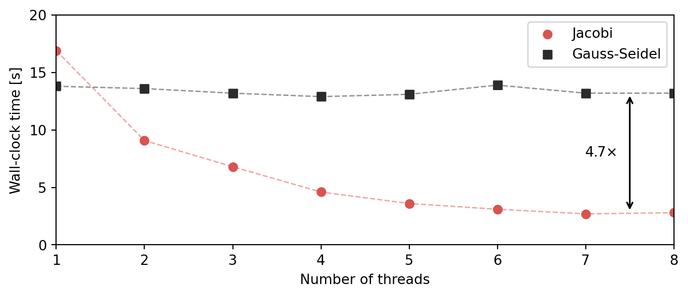
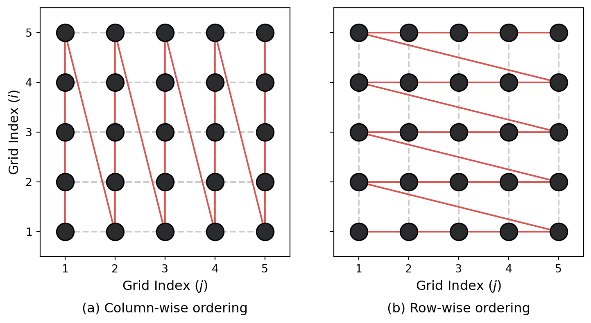
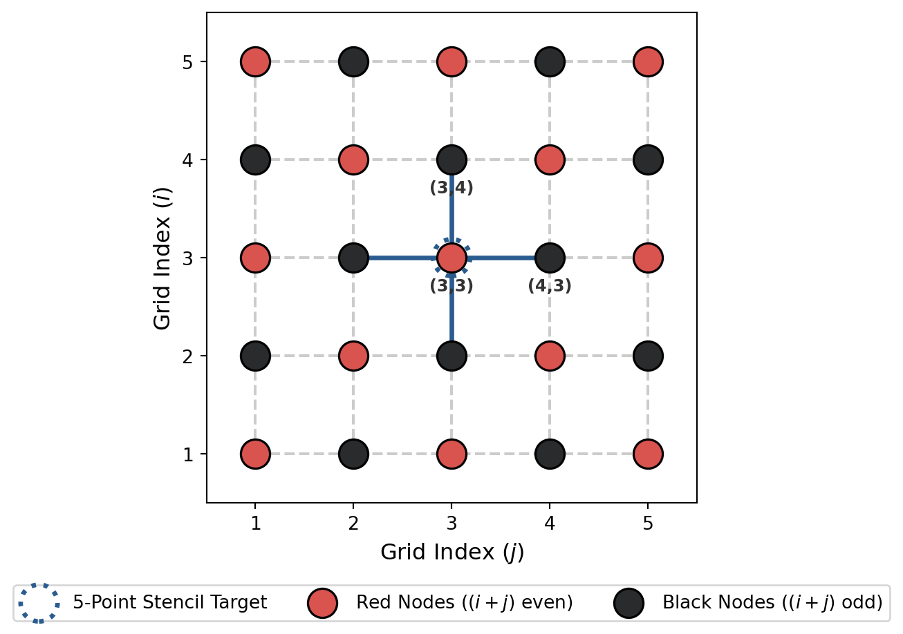
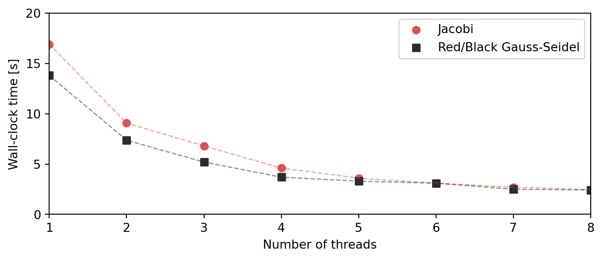
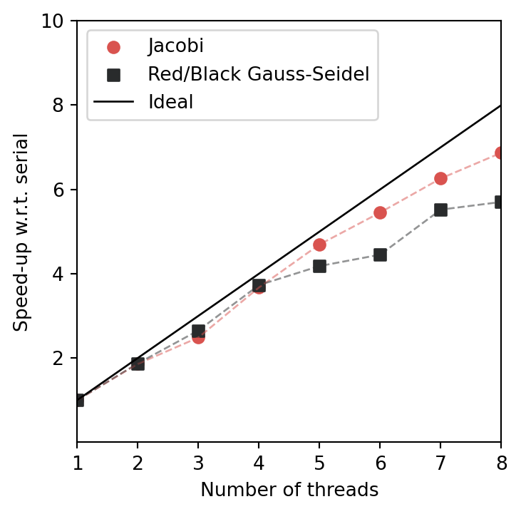

Red or Black?
Restoring Gauss-Seidel parallelization.
blog

Last time, we set out to restore Gauss-Seidel to its rightful place. And we managed to do it. Or so it seems… Starting from the textbook lexicographic kernel
do j = 2, n-1
do i = 2, n-1
u(i, j) = 0.25_dp*(dx2*b(i, j) + u(i+1, j) + u(i-1, j) &
+ u(i, j+1) + u(i, j-1))
end do
end dowe used loop-unrolling techniques and a bit of algebra to rewrite it as
real(dp), parameter :: c = 0.25_dp
real(dp), parameter :: c2 = 0.0625_dp
do j = 2, n-1
do i = 2, n-2, 2
um = u(i-1, j)
tmp1 = dx2*b(i, j) + (u(i+1, j) + u(i, j+1) + u(i, j-1))
tmp2 = dx2*b(i+1, j) + (u(i+2, j) + u(i+1, j+1) + u(i+1, j-1))
u(i, j) = c *(um + tmp1)
u(i+1, j) = c2*um + (c2*tmp1 + c*tmp2)
end do
! Handles the case where an odd number of grid points is used.
if (mod(n, 2) == 1) then
tmp1 = dx2*b(n-1, j) + (u(n, j) + u(n-1, j+1) + u(n-1, j-1))
u(n-1, j) = c*(u(n-2, j) + tmp1)
end if
end doA slightly more complicated implementation admittedly. But the added complexity paid off: we drastically reduced the number of loop-carried dependencies. In doing so, we enabled the compiler to make use of instruction-level-parallelism and generate a much faster code. Using our classical 2D Poisson test case with 512 points per direction, we obtained the following timings:
| Solver | Iterations | Time / iteration | Total |
|---|---|---|---|
| Jacobi | 138 000 | 115 µs | 16 s |
| Textbook Gauss-Seidel | 74 000 | 1054 µs | 78 s |
| Unrolled Gauss-Seidel | 74 000 | 175 µs | 13 s |
This new kernel runs 6 times faster than the original one. And, although a single iteration is slightly slower than Jacobi, the better convergence rate of the Gauss-Seidel method allows this kernel to compute the solution to our problem almost 3 seconds faster. This is clearly a win, so why do I keep bothering you with Gauss-Seidel?
The reason is pretty simple: because of the loop-carried dependency, this kernel cannot be easily vectorized nor parallelized. And I like my kernels being vectorized. This can be inferred directly from the assembly code emitted by the compiler (gfortran 15.1 with -O3 -march=native -mtune=native here) for the inner-most loop
.L5:
vmovsd 16(%rax), %xmm1
vmovsd 8(%rax), %xmm0
addq $16, %rdx
vaddsd 8(%rax,%rsi,8), %xmm1, %xmm1
vaddsd (%rax,%rsi,8), %xmm0, %xmm2
vaddsd 8(%rax,%rcx,8), %xmm1, %xmm1
vaddsd (%rax,%rcx,8), %xmm2, %xmm2
addq $16, %rax
vfmadd231sd -8(%rdx), %xmm5, %xmm1
vfmadd231sd -16(%rdx), %xmm5, %xmm2
vmulsd %xmm4, %xmm1, %xmm1
vaddsd %xmm3, %xmm2, %xmm0
vmulsd %xmm4, %xmm0, %xmm0
vfmadd132sd %xmm6, %xmm1, %xmm2
vfmadd132sd %xmm6, %xmm2, %xmm3
vunpcklpd %xmm3, %xmm0, %xmm0
vmovupd %xmm0, -16(%rax)
cmpq %rax, %rdi
jne .L5If you look at the mnemonics (that is the last two letters of most instructions), you’ll see that almost all of them are sd. Take the vaddsd on line 5 for instance. What it stands for is Vector Add Scalar Double-Precision. The Vector here has nothing to do with SIMD vectorization. It simply means the instruction belongs to the Advanced Vector Extensions (AVX) set. Add is pretty obvious right, we add numbers. The problem is Scalar Double-Precision. Basically, this means that we process grid points one at a time. And even though reducing the loop-carried dependencies enabled the scheduler to use instruction-level parallelism (which is why this kernel runs faster), I’d rather have this algorithm (not the kernel) be vectorized.
But why is the lack of vectorization a problem?
Here is a simple reason: if a kernel is vectorized, modern CPUs can process several grid points with a single instruction (SIMD). If the computation is also free of dependencies between those points, we can distribute those independent operations across multiple threads. In my case, my CPU has 8 physical cores. From a practical point of view, what it entails is: if I can figure out how to have a vectorized implementation of the Gauss-Seidel algorithm with no loop-carried dependencies, this kernel could run (theoretically) up to 8 times faster at no extra cost by leveraging multithreading. Same code, same hardware, 8x speed-up. So here is the problem: we did not restore Gauss-Seidel to its rightful place yet precisely because the Jacobi kernel is easily vectorized. And because it also has no loop-carried dependencies, it can also be accelerated quite significantly on the exact same machine.
Yes I know, memory-bounded so not quite true. We’ll get there eventually.
Let’s put this assertion to the test
Same old same old: 2D Poisson on the unit square with homogeneous Dirichlet boundary conditions, non-zero forcing, and second-order accurate finite differences on a uniform grid with 512 points per direction. Both kernels are compiled with gfortran -O3 -march=native -mtune=native -ftree-parallelize-loops=n where n is the number of threads we want to use. Hereafter, we’ll let n vary between 1 (serial) and 8 (the maximum number of threads on my laptop).
This figure depicts the time-to-solution for the two kernels as we vary n. The left-most points are our serial setup, i.e. what we considered so far. As before, the unrolled Gauss-Seidel kernel is slightly faster than the Jacobi one! Things however go south as soon as we enable multithreading… By the time we reach the full 8 threads, the Jacobi solver is roughly 5 times faster than our brand new Gauss-Seidel one. This is why I said our win from last time was serial only. Because all the lattice updates in Jacobi are independent from one another, adding a single option (-ftree-parallelize-loops=n) lets the compiler parallelize the Jacobi solver and have it outperform Gauss-Seidel by quite a margin despite its worse convergence properties.
So what can we do?
Well, for this particular implementation of the Gauss-Seidel method, not much actually. We haven’t quite reached the end of the road yet, but taking the final step would require a hefty number of changes in the code as well as a deeper understanding of the underlying hardware. And sometimes, you do have to bite the bullet and take this extra step because that is the only thing you can do. But here, I’d like to actually take a step back instead, and reflect on where the troubling loop-carried dependencies actually come from.
What I have in mind here are things like temporal blocking, diamond tiling, and the likes. Here is a very comprehensive stackoverflow post if you’re interested.
Let’s look back to our original Gauss-Seidel kernel (the unrolled one is just a variation around it)
do j = 2, n-1
do i = 2, n-1
u(i, j) = 0.25_dp * (b(i, j)*dx2 + u(i-1, j) + u(i+1, j) &
+ u(i, j-1) + u(i, j+1))
end do
end doThe loop-carried dependencies identified in the previous post come from the fact that u(i, j) cannot be updated until u(i-1, j) has already been. Had we implemented the kernel as
do i = 2, n-1
do j = 2, n-1
u(i, j) = 0.25_dp * (b(i, j)*dx2 + u(i-1, j) + u(i+1, j) &
+ u(i, j-1) + u(i, j+1))
end do
end doinstead, i.e. scanning through the rows first rather than the columns, the loop-carried dependency would still be there: u(i, j) couldn’t be updated until u(i, j-1) had been. These two kernels correspond to slightly different ordering of the unknowns. The traversal path associated to each is illustrated below.

Quite clearly, both of these orderings process the grid points sequentially. So the question is: is this sequential process (and the resulting loop-carried dependencies) a fundamental property of the Gauss-Seidel method, or is it simply a consequence of the way we ordered the grid points?
Leveraging the mathematical structure of the problem
It turns out that the answer to this question is no, the sequential processing of grid points is not a fundamental property of the Gauss-Seidel method (at least when applied to this 2D Poisson problem). And yes, for our particular problem, we can find a better ordering that will actually get entirely rid of the loop-carried dependencies. But to find this ordering, we’ll have to look back at the problem from a completely different angle. Instead of trying to come up with variations of the lexicographic kernel hoping it’ll help the compiler do a better job, we’ll have to figure out on our own if there is an underlying mathematical structure to our problem that we can leverage to design a fundamentally better kernel.
Red and black coloring
Alright, so let’s start from the beginning again. Both the Jacobi and Gauss-Seidel update rules for the 2D Poisson equation can be written as
\[ u_{i, j}^{(t+1)} = \dfrac{1}{4} \left( b_{i, j} \cdot \Delta x^2 + u_{i-1, j}^{(?)} + u_{i+1, j}^{(?)} + u_{i, j-1}^{(?)} + u_{i, j+1}^{(?)} \right). \]
For Jacobi, the superscript \((?)\) is simply \((t)\), i.e. we update \(u_{i, j}^{(t+1)}\) from old values stored in a completely different buffer. For Gauss-Seidel on the other hand, the superscript \((?)\) can be either \((t)\) or \((t+1)\) since we directly use the newly updated values whenever possible, leading to
\[ u_{i, j}^{(t+1)} = \dfrac{1}{4} \left( b_{i, j} \cdot \Delta x^2 + u_{i-1, j}^{(t+1)} + u_{i+1, j}^{(t)} + u_{i, j-1}^{(t+1)} + u_{i, j+1}^{(t)} \right). \]
This is a very simple update rule, so how the hell can we find a more hardware-friendly ordering? To get some intuition, let’s look at the figure below.

The different grid points have been color-coded in a very specific way. Points for which \((i + j)\) is even are red, while those for which \((i + j)\) is odd are black. We’ve also highlighted the standard 5-point discrete Laplacian stencil we’re using for the node \((3, 3)\). And something should jump out directly: this red point update depends only on black points, as does every other red point. And conversely, any black point update depends solely on red points. It looks very promising, isn’t it! It seems like we could update all of the red points simultaneously based on the old values of the black points, and then update all of the black points (simultaneously again) based on the just-updated values of the red ones. Suspiciously similar to Gauss-Seidel… And it is actually the same plain old Gauss-Seidel we’ve been looking at for some time, simply using a different ordering breaking the sequential nature of the lexicographic kernel that would have led otherwise to loop-carried dependencies.
A detour through the mathematics
You should have by now at least a good intuition for why this red/black ordering may be beneficial. Let’s now try to formalize that mathematically starting from our original linear system
\[ Ax = b. \]
When \(A\) is symmetric positive-definite, Gauss-Seidel uses the additive decomposition \(A = D + L + L^\top\) (with \(D\) diagonal, and \(L\) strictly lower triangular) to arrive at the iterative update rule
\[ \left( D + L \right) x_{t+1} = b - L^\top x_t. \]
The loop-carried dependency we’ve identified in the lexicographic kernel comes precisely from the fact that the lower triangular matrix \(D + L\) is inverted using forward substitution. But let’s now re-order our vector of unknowns \(x\) by introducing a permutation matrix \(P\). This leads to the linear system \(PAP^\top z = Pb\), where \(z = Px\) is the re-ordered vector of unknowns. Partitioning this vector into two sets leads to the block system
\[ \begin{bmatrix} D_1 & B \\ C & D_2 \end{bmatrix} \begin{bmatrix} z_1 \\ z_2 \end{bmatrix} = \begin{bmatrix} b_1 \\ b_2 \end{bmatrix}, \]
and we could try to iteratively solve this system using the following update rule
\[ \begin{aligned} D_1 z_1^{(t+1)} & = b_1 - B z_2^{(t)} \\ D_2 z_2^{(t+1)} & = b_2 - C z_1^{(t+1)}. \end{aligned} \]
Depending on the matrix \(A\) and how we re-ordered the unknowns, this may or may not converge. But so far, we’ve only considered an arbitrary permutation matrix \(P\). The name of the game thus is finding a permutation matrix \(P\) such that
- \(D_1\) and \(D_2\) are easy to invert,
and
- this update rule actually converges.
This is exactly what the red/black ordering is doing for our Poisson problem. There are two things to note. First, because our original system is symmetric, we actually have \(B = C^\top\). Second, since the red (resp. black) depend exclusively on the black (resp. red) ones, the \(D_1\) and \(D_2\) are simply multiples of the identity matrix and thus trivial to invert. So our first condition checks out. Let’s move on with the second one: does it actually converge?
Things get a bit more complicated here, but the answer is for our specific problem, yes it does. I’ll omit the proof and just give the main ideas. Because \(A\) is symmetric positive definite, the matrix
\[ P A P^\top = \begin{bmatrix} D_1 & B \\ B^\top & D_2 \end{bmatrix}, \]
also is (where \(P\) is the permutation matrix associated to the red/black ordering). The red/black iteration is therefore simply block Gauss-Seidel applied to this SPD system, with \(D_1\) and \(D_2\) as the two diagonal blocks. Standard convergence results for block Gauss-Seidel then guarantee convergence. So condition 2 also checks out. The important point however is that we have changed the ordering, not the underlying iteration: the converged solution is still the solution of the original linear system (up to the permutation of the unknowns).
Condition 2 holding true is not specific to red/black ordering. Any permutation would work because it has everything to do with the original matrix being symmetric positive definite.
Back to business!
Alright, we’re all set. Back to Fortran!
The red/black Gauss-Seidel kernel
After a bit of fiddling around, it shouldn’t be too hard to realize that the red/black Gauss-Seidel kernel can be written as
do k = 0, 1
!$omp parallel do default(none) private(j, i, istart) shared(n, u, b, dx2, k) schedule(static)
do j = 2, n-1
istart = 2 + mod(k+j, 2)
do i = istart, n-1, 2
u(i, j) = 0.25_dp*(b(i, j)*dx2 + u(i+1, j) + u(i-1, j) &
+ u(i, j+1) + u(i, j-1))
end do
end do
!$omp end parallel do
end doForget about the OpenMP stuff for now. If you look at lines 6 and 7, you’ll see that this is the exact same update rule as before. The only thing that changed is how we loop over \(i\) and \(j\). Note that, when k = 0, the loop updates the red points, and when k = 1 it updates the black ones. So is this really good enough to recover the SIMD vectorization and multithreading capabilities of Jacobi?
In an ideal world, we could have written it using
do concurrent. But for some reason, gfortran does not like it when going multithreaded.As in the previous post, we’ll run this kernel through OSACA. We’ll thus compile it with the same options as before: gfortran -O3 -march=native -mtune=native so that vectorization is enabled. Here are the results for the inner-most loop updating only the red points.
Port pressure in cycles
| 0 - 0DV | 1 | 2 - 2D | 3 - 3D | 4 | 5 | 6 | 7 || CP | LCD |
---------------------------------------------------------------------------------------------------
168 | | | | | | | | || | | .L17:
169 | | | 0.50 0.50 | 0.50 0.50 | | | | || | | vmovupd (%r9,%rax), %ymm1
170 | | | 0.50 0.50 | 0.50 0.50 | | | | || | | vmovupd (%r8,%rax), %ymm10
171 | | | 0.50 0.50 | 0.50 0.50 | | | | || | | vmovupd (%rdi,%rax), %ymm12
172 | | | 0.50 0.50 | 0.50 0.50 | | | | || | | vmovupd (%rsi,%rax), %ymm14
173 | | | 0.50 0.50 | 0.50 0.50 | | 1.000 | | || 3.0 | | vpermt2pd 32(%r9,%rax), %ymm2, %ymm1
174 | | | 0.50 0.50 | 0.50 0.50 | | 1.000 | | || | | vpermt2pd 32(%r8,%rax), %ymm2, %ymm10
175 | | | 0.50 0.50 | 0.50 0.50 | | | | || | | vmovupd (%r10,%rax), %ymm0
176 | 0.50 | 0.50 | | | | | | || 4.0 | | vaddpd %ymm10, %ymm1, %ymm1
177 | | | 0.50 0.50 | 0.50 0.50 | | 1.000 | | || | | vpermt2pd 32(%rdi,%rax), %ymm2, %ymm12
178 | | | 0.50 0.50 | 0.50 0.50 | | 1.000 | | || | | vpermt2pd 32(%rsi,%rax), %ymm2, %ymm14
179 | | | 0.50 0.50 | 0.50 0.50 | | 1.000 | | || | | vpermt2pd 32(%r10,%rax), %ymm2, %ymm0
180 | 0.50 | 0.50 | | | | | | || 4.0 | | vaddpd %ymm12, %ymm1, %ymm1
181 | 0.50 | 0.50 | | | | | | || 4.0 | | vaddpd %ymm14, %ymm1, %ymm1
182 | 0.50 | 0.50 | | | | | | || 4.0 | | vfmadd132pd %ymm7, %ymm1, %ymm0
183 | 0.50 | 0.50 | | | | | | || 4.0 | | vmulpd %ymm4, %ymm0, %ymm0
184 | | | | | | 1.000 | | || 3.0 | | vextractf64x2 $1, %ymm0, %xmm1
185 | | | 0.50 | 0.50 | 1.00 | | | || | | vmovlpd %xmm0, (%rdx,%rax)
186 | | | 0.50 | 0.50 | 1.00 | | | || | | vmovhpd %xmm0, 16(%rdx,%rax)
187 | | | | | | 1.000 | | || | | valignq $3, %ymm0, %ymm0, %ymm0
188 | | | 0.50 | 0.50 | 1.00 | | | || 0.0 | | vmovsd %xmm1, 32(%rdx,%rax)
189 | | | 0.50 | 0.50 | 1.00 | | | || | | vmovsd %xmm0, 48(%rdx,%rax)
190 | 0.00 | 0.00 | | | | -0.01 | 1.00 | || | 1.0 | addq $64, %rax
191 | 0.00 | 0.00 | | | | -0.01 | 1.00 | || | | cmpq %rax, %r12
192 | | | | | | | | || | | * jne .L17
2.50 2.50 7.00 5.00 7.00 5.00 4.00 6.980 2.00 26.0 1.0 If you remember what we’ve done last time, the loop-carried dependencies have been reduced from 4 to 1, and this 1 is only related to incrementing the loop counter so utterly irrelevant. Moreover, if you look at the assembly code, you’ll see that the mnemonics are now pd. So there you have it! Not only does the red/black ordering for Gauss-Seidel lead to a complete disappearance of the loop-carried dependencies, but it also enables SIMD vectorization! That is a win on both accounts. So let’s pit it against Jacobi now.
Surprisingly, the story for the black loop is slightly messier. It is not just the symmetric of this one, but the absence of loop-carried dependencies is still true so we won’t deep dive into this.
One step at a time…
There’s no point in showing the parallel performance if the serial one is not good enough. So before the grand reveal, let’s do just that: make sure we’ve at least not degraded the performance of the serial code. Same experiments as before: sanity check (no optimization whatsoever), critical one (-O3 but no vectorization), and cherry on top (vectorization turned on).
Experiment n°1 – baseline, no optimization
First things first: sanity check. Compiled with -O0, so no scheduling cleverness of any kind gets to play.
| Solver | Iterations | Time/iteration | Total |
|---|---|---|---|
| Jacobi | 138 000 | 2 ms | 273 s |
| Unrolled GS | 74 000 | 2.07 ms | 153 s |
| Red/black GS | 74 000 | 2 ms | 148 s |
So unoptimized serial performance of the red/black Gauss-Seidel kernel is essentially the same as that of the unrolled kernel. And the solution, even though not shown, is the same up to the desired tolerance. And as before, both Gauss-Seidel kernels are effectively twice as fast to compute the solution compared to the Jacobi kernel. So everything consistent so far.
Experiment n°2 – the critical one
Now, compile with real optimization, but deliberately keep vectorization and multithreading switched off (-O3 -march=native -mtune=native -fno-tree-vectorize and no OpenMP shady business) so that any gains we see can’t be attributed to SIMD at all.
The actual command line used is
fpm run --profile release with the flags specified in the text. So effectively, there are a bunch of other options turned on by fpm, but they’re the same for all kernels.| Solver | Iterations | Time/iteration | Total |
|---|---|---|---|
| Jacobi | 138 000 | 167 µs | 23 s |
| Unrolled GS | 74 000 | 175 µs | 13 s |
| Red/black GS | 74 000 | 200 µs | 15 s |
With no SIMD enabled, the red/black kernel is slightly slower than the unrolled lexicographic one, but still faster than Jacobi. One possible explanation is that the red/black kernel has to loop over the entire array twice: once to update the red points, and once more to update the black ones. So possibly a bit more memory traffic, but nothing too detrimental.
Experiment n°3 – turning SIMD vectorization back on
Finally, the same three kernels, same flags, but with vectorization allowed (but no multithreading still).
| Solver | Iterations | Time/iteration | Total |
|---|---|---|---|
| Jacobi | 138 000 | 115 µs | 16 s |
| Unrolled GS | 74 000 | 175 µs | 13 s |
| Red/black GS | 74 000 | 175 µs | 13 s |
So enabling SIMD shaves off the extra 25 µs for the red/black kernel execution, making its serial performance on par with the unrolled kernel we discussed last time. So that is good: essentially no regression in the serial performance.
Let’s go parallel
So far, we’ve only looked at serial performance. But the whole point of coming up with the red/black ordering was not to have yet another variation on Gauss-Seidel, but actually have a kernel that can run in parallel. So it’s time to show you what you came for! Same setup as experiment n°3, but now enable multithreading and vary the number of threads from 1 to 8. And TADA!

Everything works as expected. Leveraging the red/black ordering not only leads to the elimination of loop-carried dependencies while enabling SIMD vectorization, but also multithreading. So, even though the advantage of red/black Gauss-Seidel over Jacobi reduces as we increase the number of threads, it is still a bit faster. Now we can actually claim victory.
Is this finally the end of the road?
It took us quite a bit of time to get where we wanted, but here we are: we’ve restored Gauss-Seidel to its rightful place! So it is only natural to ask are we really done now? Well… as far as Jacobi and Gauss-Seidel go, pretty much. But there is still a lot we can do.
First, let’s replot the data from the last figure to see the actual speed-up as we increase the number of threads.

Both track close to the ideal scaling: doubling the number of threads gets you the solution almost twice as fast. If you’d stop there, you would say that this is very good. But it actually is a misleading picture. Even though a grid of 512 \(\times\) 512 points results in roughly a quarter million unknowns, a really big problem by everyday standards, it simply is too small to really stress-test the hardware (even on my laptop). We do need to go to a bigger problem to make some meaningful conclusions. So we will eventually dabble into the field of performance engineering and explore the so-called roofline model, a deceptively simple but highly informative model.
The other question I’d like to answer is can we modify Gauss-Seidel in just the right way as to massively reduce the number of iterations? This will bring us to the territories of successive over-relaxation, Chebyshev iterations and multigrid methods. But these are stories for another time.
If you want to read more of my stuff